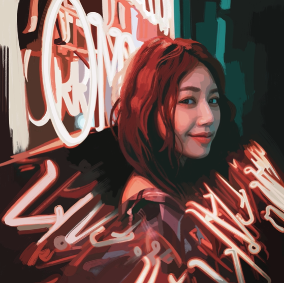
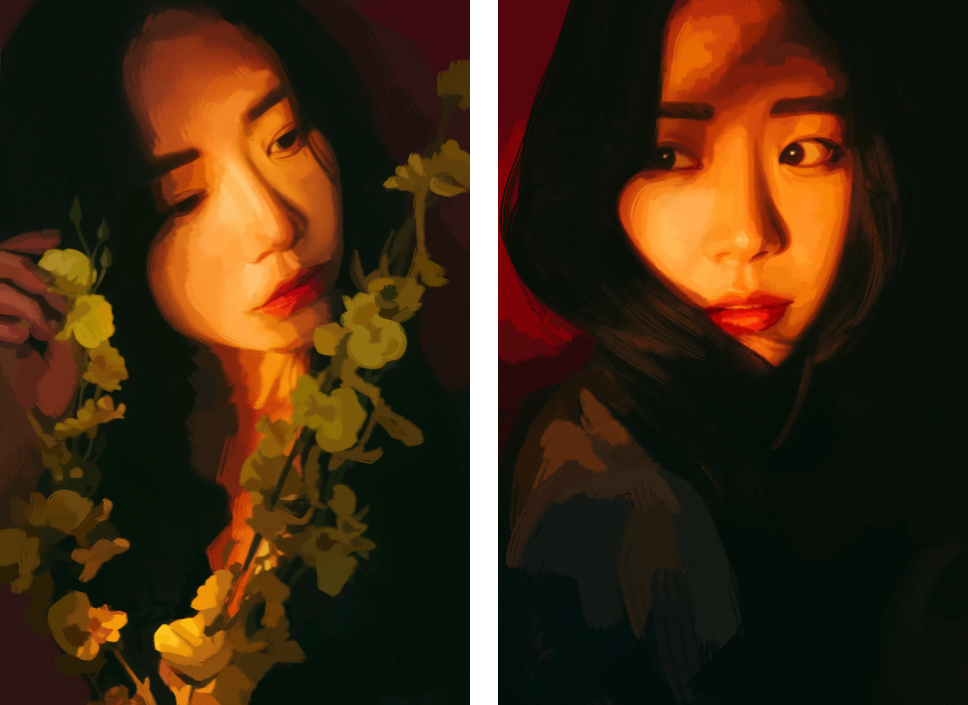

Avatar Design
This project is about clients can choose their color tone and brightness, facial expression, and camera angle for profile pictures. They can use their own photos or take new ones on their phone or draw abstract diagrams. The final product will be a unique, one-of-a-kind avatar picture.
Entrepreneurial Background
Looking at the ways influencers worldwide are dedicated to the communities they run, they care about their personal brand and attributes. This makes me want to start designing avatar sticker photos. A sticker photo conveys the personal style and tells many stories. The chosen colors also reflect the owner's taste. I enjoy hand sketches much more than computer-drawn images, and it was very much like the Middle Ages when it was enjoyable for people to get their portraits made. With such oil and watercolor paintings becoming a rare form of expression, they are also becoming harder to come by and more attractive.Â
 